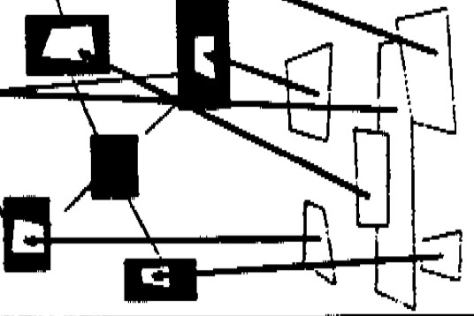

hypertext [basis]

Ted Nelson,
Literary Machines, 14-17.
Early in the 1960's, Ted Nelson coined the term hypertext, to
mean forms of non-linear writing. Hypertext is characterized as a
directed graph structure of nodes and links. From the start of its
conception, writers and computer scientists have been involved.
labyrinths

Mike Figgis,
Timecode, 2000.
cast: Saffron Burrows, Salma Hayek, Jeanne Tripplehorn, Stellan Starsgård.
Four digital video cameras at four different locations synchronized together
to tell a story.
found objects

Lucy Lippard and Marcel Duchamp, in Dadas On Art, Prentice Hall, 1972,
excerpt 139-143.
Marcel Duchamp's Fountain was perhaps the most important
art work of the 20th century. How did this anti-masterpiece
demonstrate the power of context, when an object is referenced?
hypertext art


semantics-ontologies
maps

David Turnbull,
Maps are Territories - Science is an Atlas,
vi, 1-3, 12-15, 18-27, 34-35, 50-51.